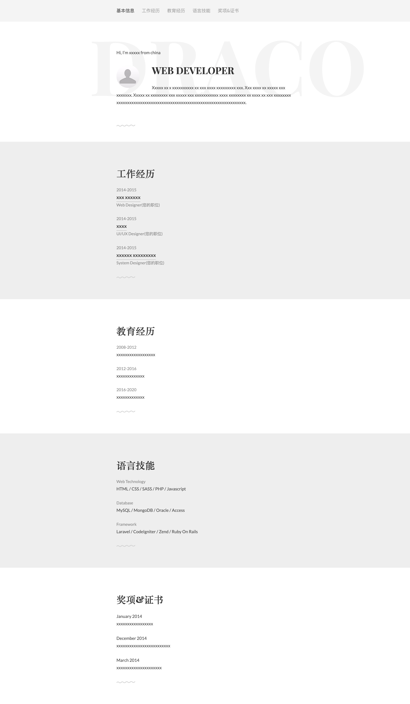

个人简历
基本信息
工作经历
教育经历
语言技能
基本信息
Name:diraffe Age:29
Tel:13311022030
工作经历
- SUMAVISION 2015-2018
- Responsible for the economic and technical performance requirements of the project contract.
Coordinate the internal and external business relations of the project.
- Organize or participate in the preparation of organizational design, the preparation of construction
process dynamics,project and production plans,
and be responsible for the preparation and accounting
of budget cost plans after project completion.
- Responsible for the completion of the project in terms of quality, duration, cost, safety and production
values and organizing the implementation of the whole process
of prevention and control to improve
the quality assurance system and participate in process inspection and evaluation.
- Responsible for project quality assessment and organizing the completion of projects.
教育经历
- BUPT 2020-2022
- DUT 2011-2015
语言技能
CET-6/PMP
- 链接是什么概念，对应什么标签？
用于跳转，a标签
- 常用标签都有哪些，都适合用在什么场景？
标题h、链接a、段落p、分块div、表ul/ol
- ol 、ul 、li 、dl 、dd 、dt 等这些标签都适合用在什么地方，举个例子。
有序、无序、自定义
- img 中的 src 和 alt 属性有什么作用?
源文件地址、无图片时显示文字
- img 的中 title 属性会产生什么效果？
悬浮提示
- 一个页面只能有一个 h1 吗？为什么？
是的，唯一强调
- div 和 span 的区别是什么，它们俩有什么不同？
div划分区域；span划分行内
- a 标签的 tagert 属性值有哪些？对应作用是什么？
选择链接在哪打开